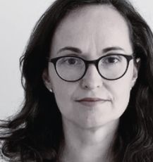
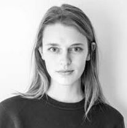
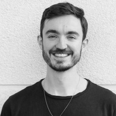
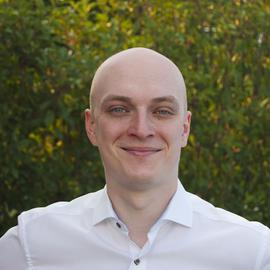
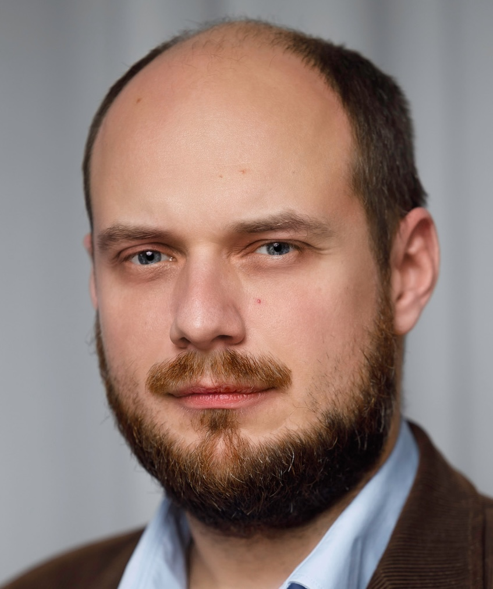
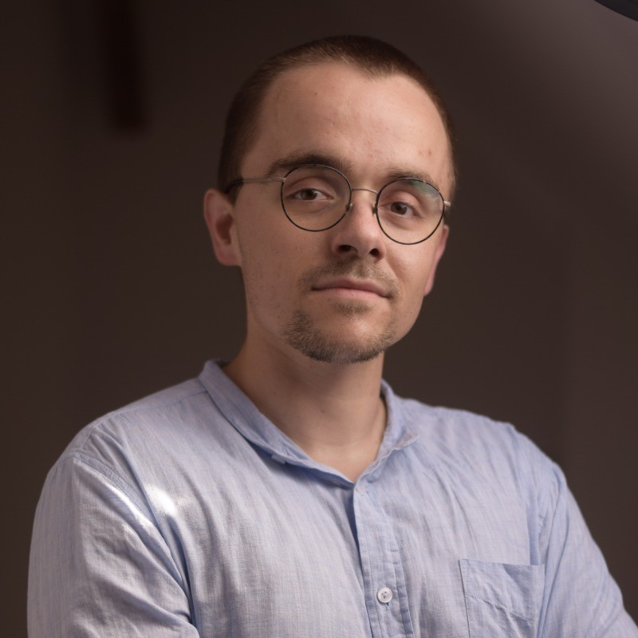
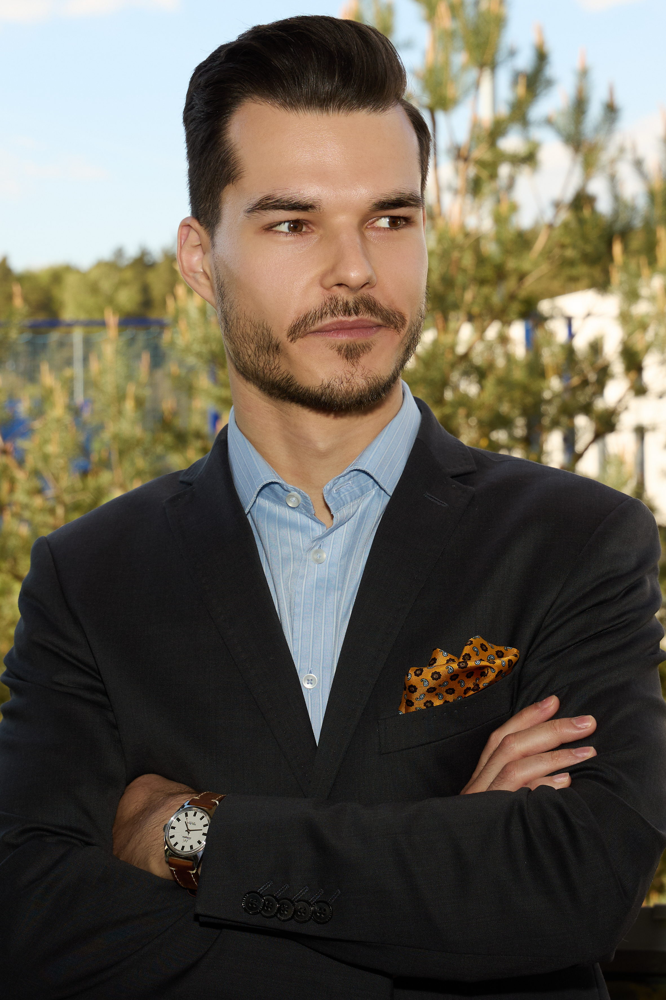

University of Warsaw
Professor Biel is an Associate Professor at the Institute of Applied Linguistics, University of Warsaw, where she leads the EUMultilingua Research Team. She is a renowned expert in corpus linguistics, legal translation, and specialized translation, with a strong focus on EU legal language and terminology. Her research explores the intersection of law and linguistics, contributing to a deeper understanding of how legal texts are translated and interpreted across different jurisdictions. Beyond her academic work, Professor Biel is actively involved in shaping the field through editorial roles. She is the Editor-in-Chief of "The Journal of Specialised Translation" and serves on the Editorial Board of "Translation & Interpreting Studies for Open Science". Her contributions have significantly influenced both research and practice in legal translation.
HURIDOCS
Bina is a Programme Officer at HURIDOCS (Human Rights Information and Documentation Systems), an NGO dedicated to helping human rights groups gather, organize, and use information to create positive change. Since 1982, HURIDOCS has developed tools and methodologies that empower defenders to manage and analyze evidence, law, and research - turning information into a force for good. With a passion for technology and human rights, Bina provides training on data modeling, user-friendly database configuration, and evidence-driven analysis for organizations worldwide. Her expertise spans roles at the Geneva Centre for Security Policy, the Korean Ministry of Foreign Affairs, and the Committee for Human Rights in North Korea. She has also conducted research on satellite technology for human rights documentation.

Bellingcat
Merel Zoet OSINT researcher at Bellingcat, with expertise in data verification, online investigations, and fact-checking. She specializes in uncovering disinformation, analyzing online extremism, and using technology to verify real-world events.

Bellingcat
Foeke Postma OSINT specialist and investigator at Bellingcat, focusing on digital forensics, geolocation, and military intelligence. His work has exposed security vulnerabilities, tracked conflicts, and uncovered human rights violations using open-source methodologies.

University College London
Dr Ovádek is a Lecturer in European Institutions, Politics, and Policy at University College London (UCL). His research focuses on the interaction between law and politics in the European Union, particularly in the judicial and legislative areas. He has made significant contributions to the study of the Court of Justice of the European Union and has published extensively on topics related to European integration, judicial politics, and regional politics in Central and Eastern Europe. Dr Ovádek actively integrates developments in statistics and quantitative text analysis to uncover patterns and insights within complex datasets. His work involves creating data visualizations and tools that enhance the understanding of political and legal phenomena. By leveraging these methodologies, Dr Ovádek provides a nuanced and data-driven perspective on the interplay between law and politics within the European Union, contributing significantly to the field of social sciences.

University College London
Jakub Jaraczewski is a Research Coordinator at Democracy Reporting International, a Berlin-based NGO committed to promoting democracy and the rule of law worldwide.
His research focuses on the crisis and recovery of the rule of law in Central and Eastern Europe. Under the re: constitution programme, he collaborates with journalists and policymakers to improve public debate on the rule of law within the European Union. His insights have appeared in leading media outlets such as The New York Times, The Guardian, The Economist, Politico, Euronews, and other significant European and global publications.
Jakub holds a magister (M.A.) degree in law from Adam Mickiewicz University in Poznań, Poland, where he previously taught human rights and constitutional law and worked on several research projects.

Teaching Assistant
Jan Mizerka holds a degree in Cognitive Science (from AMU) and currently works as a software engineer. His professional focus is on automating production processes within the offset printing industry. He has experience in brain research, particularly in EEG data analysis utilizing machine learning and artificial intelligence techniques. Jan possesses advanced proficiency in Python and SPSS, along with a foundational knowledge of R. His broader interests lie in the societal impact of artificial intelligence and its applications across various scientific disciplines.

Teaching Assistant
Mikołaj is a PhD Student at the Faculty of Psychology and Cognitive Science at Adam Mickiewicz University. His research focuses on how different learning techniques influence memory and recall. He teaches cognitive psychology and is a strong advocate for applying Signal Detection Theory in social contexts. Mikołaj is also a member of the Learning and Metacognition Experimental Lab (LaMELab). He has hands-on experience with SPSS and is familiar with the basics of R and Python.